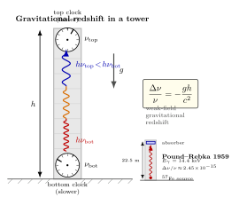

时间真的会变快慢吗?
上一节我们承认了一件颠覆直觉的事: 引力不是一种力, 而是"自由下落"和"惯性运动"在局部不可分辨的几何后果. 这一节我们把这个原则推到一个具体到可以拿铯钟读出来的预言: 同一个时空里两点上的钟, 跑得快慢不同 — 高处快, 低处慢. 它不仅是公式, 不仅是 1959 年那次哈佛塔上的实验, 它还是你今天打开手机定位时, 后台那枚星载铯钟正在被工程师每天补偿的事实.
我们的策略是: 先借等效原理把它从狭义相对论的多普勒效应直接推出来; 然后把它翻译成度规语言, 看看它在 Schwarzschild 黑洞外是什么样; 再代两组真实数字 — 一组是 22.5 米塔, 一组是 20200 km 高的 GPS — 看实验和理论怎么相符. 整个过程中我们尽量不挥手, 每一步代数都摆在面前.
一、电梯里的多普勒: 红移其实就是引力红移
把上一节那个被关在密闭电梯里的观察者请回来. 等效原理说: 一个静止在地面引力场里的电梯, 与一个在远离一切引力的太空里以加速度 $a=g$ 向上加速的电梯, 局部物理一样. 我们就在第二种电梯里做一次思想实验, 结果一定也对第一种成立.
设电梯高 $h$. 在底部 $t=0$ 时刻, 一个原子发出一束频率 $\nu_{\rm bot}$ 的光向上. 光以速度 $c$ 跑到顶部需要时间 $\Delta t \approx h/c$ (高度 $h$ 远小于 $c^2/g$ 时, 加速对传播时间的修正只在二阶, 可以暂时忽略). 在这段时间里, 电梯顶部的接收器已经"加速向上"了一段额外速度
$$ \Delta v = a\,\Delta t = g\cdot\frac{h}{c}. \tag{1} $$
站在惯性系里看: 接收器朝光源相反方向走开, 多普勒效应让它接收到的频率变低. 在 $\Delta v\ll c$ 极限下, 一阶多普勒红移给出
$$ \frac{\Delta\nu}{\nu} \;=\; \frac{\nu_{\rm top}-\nu_{\rm bot}}{\nu_{\rm bot}} \;=\; -\frac{\Delta v}{c} \;=\; -\frac{gh}{c^2}. \tag{2} $$
负号意味着 $\nu_{\rm top}\lt\nu_{\rm bot}$ — 光在向"高处"传播的过程中, 频率降低、波长拉长、能量下降. 这是引力红移 (gravitational redshift) 的弱场公式. 它来自纯狭义相对论加上等效原理, 不需要 Einstein 场方程.
等效原理告诉我们: 同样的现象必须发生在地面引力场里. 一个静止在地球底层的发射器把光发上塔顶, 顶上接收器测到的频率会比发射时低 $|\Delta\nu/\nu|=gh/c^2$. 反过来, 把光从塔顶发往塔底, 它会蓝移. 我们在地球表面 $g\approx 9.81\,\mathrm{m/s^2}$, $h=22.5\,\mathrm{m}$ 时给出
$$ \left|\frac{\Delta\nu}{\nu}\right| = \frac{gh}{c^2} = \frac{9.81\times 22.5}{(3\times 10^8)^2}\approx 2.45\times 10^{-15}. $$
这个数字小到普通光谱仪根本看不见 — 它是 1959 年 Pound 和 Rebka 在哈佛 Jefferson 物理楼塔里要测的那个数. 我们待会回来看他们怎么测的.
二、时间膨胀: 钟跑得慢, 不是钟坏了
公式 (2) 还可以反过来读. 频率是"每秒振动多少次", 它就是底端那台原子钟在每秒发出的相位数. 顶上接收器收到的频率较低意味着顶端在每"自己的一秒"里, 看到底端原子钟少打了几个数. 反过来, 底端在每"自己的一秒"里, 看到顶端原子钟多打了几个数. 顶上观察者眼中, 底下的钟走得慢; 底下的观察者眼中, 顶上的钟走得快.
这个解读把"频率"换成"时间", 把红移翻译成引力时间膨胀 (gravitational time dilation). 引入引力势 $\Phi$ ($g=-\partial\Phi/\partial z$, 上方 $\Phi$ 高, 下方 $\Phi$ 低), 弱场结论可以紧凑写成
$$ \frac{\mathrm{d}\tau_{\rm A}}{\mathrm{d}\tau_{\rm B}} = 1 + \frac{\Phi_{\rm A}-\Phi_{\rm B}}{c^2} \quad(\text{弱场}). \tag{3} $$
$\mathrm{d}\tau$ 是固有时 — 把一只钟拿在手上, 它读出的时间. 公式 (3) 说: 引力势越高 (越远离引力源), 钟跑得越快, 比例系数是 $\Phi_{\rm A}/c^2$ 量级的偏差. 与狭义相对论里 $\mathrm{d}\tau = \mathrm{d}t/\gamma$ 的速度时间膨胀彼此独立 — 一个是"运动慢", 一个是"低引力势慢", 实验上需要分别处理 (GPS 修正同时含两项, 见下文).
把这两件事 (红移 = 时间膨胀) 钉死的关键, 是能量守恒. 想象你在塔底产生一个电子-正电子对, 总能量 $2m_e c^2 + h\nu_\gamma$ (含一个伴生光子); 把电子-正电子对静止地搬上塔顶 — 这要做功 $2m_e g h$, 然后让它们湮灭, 出来的光子能量是 $2m_e c^2$, 频率 $\nu_\gamma'$. 把这个光子送回塔底, 必须能复原我们出发时的能量, 否则就是永动机. 简单算下来, 唯一让能量收支平的方式, 就是 $\nu_\gamma' = \nu_\gamma(1+gh/c^2)$, 即光向下走时蓝移 $gh/c^2$. 这个 Einstein 1911 年的论证比"等效原理 + 多普勒"还要无可逃避: 否认引力红移 = 制造永动机.
三、Schwarzschild 度规里的精确公式
等效原理只是局部成立 — 弱场近似总有一天要让位给精确公式. 我们要写下度规, 直接读时间. 把卷四 18《度规与曲率》的语言搬过来: 一个时钟在某处的固有时, 由它的世界线在度规里的弧长给出. 对一个停在某点 (空间坐标都不动, 只有时间坐标在走) 的钟, 它的固有时增量是
$$ \mathrm{d}\tau = \sqrt{-g_{00}(x)}\;\mathrm{d}t, \tag{4} $$
其中 $t$ 是某个全局坐标时, $g_{00}$ 是度规的时间分量 (我们用签名 $(-,+,+,+)$). 对球对称真空 (一颗静态星体外面), Einstein 场方程的解是 Schwarzschild 度规:
$$ \mathrm{d}s^2 = -\Big(1-\frac{r_s}{r}\Big)c^2\,\mathrm{d}t^2 + \Big(1-\frac{r_s}{r}\Big)^{-1}\mathrm{d}r^2 + r^2\,\mathrm{d}\Omega^2, $$
其中 $r_s = 2GM/c^2$ 是 Schwarzschild 半径 (Sun 的 $r_s\approx 3$ km, Earth 的 $r_s\approx 9$ mm). 由 (4), 一个停在半径 $r$ 处的钟的固有时与远处坐标时之比是 $\sqrt{1-r_s/r}$. 一束光从 $r$ 处发出抵达无穷远, 频率比由能量与时间倒数关系给出:
$$ \frac{\nu_\infty}{\nu_{\rm emit}} = \sqrt{1-\frac{r_s}{r}}\quad\Longleftrightarrow\quad 1+z = \frac{1}{\sqrt{1-r_s/r}}. \tag{5} $$
$z$ 是常用的红移定义. 在弱场极限 $r_s/r\ll 1$, 展开根号 $\sqrt{1-r_s/r}\approx 1-r_s/(2r)$, 所以 $\Delta\nu/\nu\approx -r_s/(2r) = -GM/(rc^2) = \Phi/c^2$, 与公式 (3) 一致 (取无穷远为 $\Phi=0$).
有趣的极限: 当 $r\to r_s^+$, $\sqrt{1-r_s/r}\to 0$, 红移 $z\to\infty$. 视界外面发出的任何光子, 在远处观察者看来频率趋于零, 时钟趋于停止 — 这是Schwarzschild 视界面 = 无限红移面的几何含义. 我们卷五后面讲黑洞时还会回到它.
四、Pound-Rebka 1959: 在 22.5 米塔里看见 $10^{-15}$

1907 年的 Einstein 用思想实验导出引力红移; 1911 年他给出了能量守恒论证; 真正在地面上看见它要等到 1959 年. Robert Pound 和他的研究生 Glen Rebka 想出一个聪明办法: 利用 1958 年刚发现的Mössbauer 效应. 把 $^{57}\mathrm{Fe}$ 嵌入晶格里, 它发出的 14.4 keV $\gamma$ 线几乎没有反冲展宽, 谱线宽度 $\Gamma/E \sim 3\times 10^{-13}$, 比我们要的 $2.45\times 10^{-15}$ 还要宽两个数量级 — 但只要把谱线中心定得足够准, 还是能看到塔底发往塔顶的 $\gamma$ 线偏离塔顶吸收谱线中心的位置.
实验在哈佛 Jefferson 物理实验室那座 $h=22.5$ m 的塔上做. 发射器在底部, 吸收器在顶部 (或反之, 做对称对照消系统误差). 关键技术: 把吸收器以一个可控速度 $v$ 上下移动, 引入一个可控的多普勒频移 $\Delta\nu_{\rm dop}/\nu = v/c$, 用它来"扫"吸收谱线, 找到吸收最深的那个 $v$, 就读出了引力红移所需的多普勒补偿量. 1960 年公布的结果: 实验值与理论预测之比为 $1.05\pm 0.10$, 1965 年改进版本压到 $0.9990\pm 0.0076$ (Pound-Snider 实验). 这是历史上第一次在地面引力场里直接看到广义相对论的钟率效应.
Pound-Rebka 之后的标志性数字是 1976 年 Vessot-Levine 的 Gravity Probe A 实验: 把一台氢脉泽时钟发射到 10000 km 高的轨道, 与地面氢钟比对, 频差与广义相对论预言相符到 $7\times 10^{-5}$ 精度. 时间膨胀从此从一个塔的实验, 变成了一个轨道的实验.
五、GPS: 工程师每天都得修正广义相对论
最近、最日常的引力时间膨胀实验是GPS. 24 颗 GPS 卫星沿轨道半长径 $r\approx 26600$ km (海拔约 20200 km) 飞行, 各自带一台铯原子钟. 工程目的是: 你手机里收到 4 颗卫星的时间戳, 解一个超定方程组, 定位到你. 解的精度直接决定于钟的精度 — 1 ns 的钟差对应 30 cm 的位置误差. 卫星钟的固有日漂移规格是 $\sim 1$ ns/day. 所以任何 ns 量级的相对论效应都必须算进去.
引力部分: 卫星处的引力势比地表高 (势更大, 不那么"深"), 它的钟跑得快. 用弱场公式 (3),
$$ \frac{\Delta\tau_{\rm sat}}{\tau} = \frac{\Phi_{\rm sat}-\Phi_{\rm earth}}{c^2} = \frac{GM_\oplus}{c^2}\Big(\frac{1}{R_\oplus}-\frac{1}{r}\Big). $$
代入 $GM_\oplus = 3.986\times 10^{14}\,\mathrm{m^3/s^2}$, $R_\oplus=6371$ km, $r=26600$ km, 得到
$$ \frac{\Delta\tau_{\rm sat}}{\tau} \approx 5.3\times 10^{-10}, $$
每天 86400 秒, 累计 $\Delta\tau\approx 5.3\times 10^{-10}\times 8.64\times 10^4\,\mathrm{s} \approx 45.7\,\mu\mathrm{s/day}$ — 卫星钟比地面钟一天快约 45 微秒. 反过来, 卫星轨道速度 $v\approx 3.87$ km/s 带来一个狭义相对论速度时间膨胀, 卫星钟一天慢 $\approx 7\,\mu$s/day. 两项相加, 净效果是卫星钟一天快 38 微秒. 工程上, GPS 卫星出厂时频率被有意调低 $\Delta f/f = 4.46\times 10^{-10}$ (相对地面铯钟的标称值), 飞上去之后两个效应一抵消, 在轨钟率正好与地面钟同步. 没有这一步预补偿, GPS 一天就会偏 $38\,\mu\mathrm{s}\times c\approx 11$ km — 完全不能用.
这一段的话是落地的: 你的手机能在地图上显示位置, 是因为有人把广义相对论代到了固件里. 时间快慢有别不是远处的话; 它在你口袋里.
小结
这一节我们用等效原理 + 多普勒效应直接得到了弱场引力红移 $\Delta\nu/\nu=-gh/c^2$, 把它解读为"高处的钟跑得快、低处慢"的引力时间膨胀, 然后写到度规语言里得到精确公式 $\nu_\infty/\nu_{\rm emit}=\sqrt{1-r_s/r}$ — 视界 ($r=r_s$) 上无限红移, 这是黑洞物理后续故事的前奏. 我们对了两个数字: Pound-Rebka 1959 年那座 22.5 m 塔上的 $\Delta\nu/\nu\approx 2.45\times 10^{-15}$ 与 Mössbauer 谱线足以分辨; GPS 卫星 20200 km 海拔的 $\sim 45\,\mu$s/day 在轨钟差 (减去 $\sim 7\,\mu$s/day 的速度时间膨胀, 净 $\sim 38\,\mu$s/day) 是工程师每天都要补的真实修正. 引力红移是广义相对论最先被实验验证、也最贴近日常的预言之一. 下一节我们会用同样的等效原理论证, 把"光线在太阳边掠过会被偏折 $1.75''$"也算出来.
▲